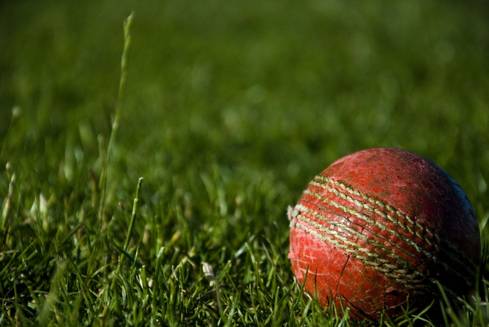

ক্রিকেটের হাতেখড়ি: নতুনদের জন্য খেলার নিয়ম, কৌশল এবং সঠিক গাইডলাইন
Category: cricket | Language: bn
ভারতে ক্রিকেট কেবল একটি খেলা নয়, বরং এটি কোটি কোটি মানুষের আবেগের সঙ্গে জড়িত। গলি থেকে স্টেডিয়াম, সর্বত্রই এই খেলার জয়জয়কার। যারা এই খেলাটি নতুনভাবে শুরু করতে চাইছেন বা এর জটিল নিয়মগুলো বুঝতে হিমশিম খাচ্ছেন, তাদের জন্য এই নির্দেশিকাটি তৈরি করা হয়েছে। এখানে আমরা ক্রিকেটের মৌলিক নিয়ম, প্রয়োজনীয় সরঞ্জাম এবং ব্যাটিং-বোলিংয়ের প্রাথমিক কৌশলগুলো নিয়ে বিস্তারিত আলোচনা করব। ক্রিকেটের তিনটি প্রধান ফরম্যাট রয়েছে— টেস্ট, একদিনের আন্তর্জাতিক (ODI) এবং টি-টোয়েন্টি। নতুন হিসেবে আপনার প্রাথমিক লক্ষ্য হওয়া উচিত খেলার মূল ভিত্তিগুলো আয়ত্ত করা, যাতে আপনি যেকোনো ফরম্যাটেই স্বাচ্ছন্দ্যবোধ করেন এবং খেলার আনন্দ উপভোগ করতে পারেন।
ক্রিকেটের মূল উদ্দেশ্য হলো প্রতিপক্ষের চেয়ে বেশি রান সংগ্রহ করা। খেলাটি শুরু হয় টসের মাধ্যমে, যেখানে দুই দলের অধিনায়ক উপস্থিত থাকেন। টস জয়ী অধিনায়ক ঠিক করেন তিনি প্রথমে ব্যাটিং করবেন নাকি বোলিং। একটি দলে ১১ জন খেলোয়াড় থাকে। ব্যাটিং দল যখন মাঠে নামে, তখন তাদের দুইজন ব্যাটার ক্রিজে থাকেন। তাদের লক্ষ্য থাকে বোলারদের মোকাবিলা করে রান তোলা এবং উইকেট বাঁচানো। অন্যদিকে, বোলিং দলের লক্ষ্য থাকে ব্যাটারদের আউট করা এবং রানের গতি কমিয়ে রাখা। যখন ব্যাটিং দলের ১০ জন খেলোয়াড় আউট হয়ে যায় বা নির্ধারিত ওভার শেষ হয়ে যায়, তখন দল দুটির ভূমিকা বদলে যায়। খেলা শেষে যার রান বেশি থাকে, সেই দল জয়ী ঘোষিত হয়।
ক্রিকেটের সবচেয়ে গুরুত্বপূর্ণ অংশ হলো পিচ, যা মাঠের মাঝখানে অবস্থিত একটি ২২ গজ লম্বা এবং ১০ ফুট চওড়া জায়গা। পিচের দুই প্রান্তে তিনটি করে কাঠের স্টাম্প থাকে, যার ওপর দুটি ছোট কাঠ বা 'বেল' (Bails) বসানো থাকে। বোলার পিচের এক প্রান্ত থেকে অন্য প্রান্তে থাকা ব্যাটারকে লক্ষ্য করে বল করেন। পিচের সামনে একটি সাদা দাগ থাকে যাকে 'পপিং ক্রিজ' বলা হয়। রান নেওয়ার সময় বা বল খেলার সময় ব্যাটারকে এই ক্রিজের ভেতরে থাকতে হয়। মাঠের চারপাশ একটি দড়ি বা লাইন দিয়ে ঘেরা থাকে যাকে 'বাউন্ডারি' বলে। বল যদি মাটি স্পর্শ করে সীমানা পার হয় তবে ৪ রান এবং সরাসরি শূন্যে ভেসে সীমানা পার হলে ৬ রান ব্যাটিং দলের স্কোরে যোগ হয়।
ব্যাটিংয়ে সফল হতে হলে সঠিক 'গ্রিপ' বা ব্যাট ধরার পদ্ধতি জানা অত্যন্ত জরুরি। আপনার দুই হাতের তালু এমনভাবে ব্যাটের হাতল ধরবে যাতে ওপর থেকে দেখলে একটি 'V' বর্ণ তৈরি হয়। এরপর আসে 'স্ট্যান্স' বা দাঁড়ানোর ভঙ্গি; আপনার দুই পা কাঁধের সমান দূরত্বে রেখে পিচের সমান্তরালে দাঁড়াতে হবে এবং মাথা স্থির রাখতে হবে। একজন নতুন ব্যাটারের জন্য 'ডিফেন্সিভ স্ট্রোক' শেখা সবচেয়ে গুরুত্বপূর্ণ, যেখানে বলের গতি কমিয়ে সেটিকে নিচের দিকে রাখা হয় যাতে আউট হওয়ার ঝুঁকি কমে। শট খেলার সময় বলের লাইনের দিকে পা বাড়ানো এবং শেষ মুহূর্ত পর্যন্ত বলের দিকে নজর রাখা সফল ব্যাটিংয়ের মূল মন্ত্র। অনেক সময় নতুনরা তাড়াহুড়ো করে বড় শট খেলতে গিয়ে উইকেট হারিয়ে ফেলেন, যা এড়িয়ে চলা উচিত।
বোলিংয়ের ক্ষেত্রে প্রধানত দুই ধরণের শৈলী দেখা যায়— পেস বোলিং এবং স্পিন বোলিং। পেস বোলাররা দৌড়ে এসে গতির সাহায্যে ব্যাটারকে পরাস্ত করার চেষ্টা করেন, অন্যদিকে স্পিনাররা আঙুল বা কবজির মোচড়ে বলকে ঘুরিয়ে ব্যাটারকে বিভ্রান্ত করেন। একজন বোলারের জন্য 'লাইন' (বল কোন দিকে যাচ্ছে) এবং 'লেংথ' (বল ব্যাটার থেকে কত দূরে ড্রপ খাচ্ছে) নিয়ন্ত্রণ করা সবচেয়ে বড় চ্যালেঞ্জ। প্রতি ওভারে ৬টি বৈধ বল করতে হয়। যদি বোলার পপিং ক্রিজ অতিক্রম করে বল করেন, তবে তাকে 'নো-বল' বলা হয় এবং ব্যাটিং দল ১ রান পাওয়ার পাশাপাশি পরের বলে 'ফ্রি-হিট' পায়। এছাড়া বল যদি ব্যাটারের নাগালের অনেক বাইরে দিয়ে যায়, তবে তাকে 'ওয়াইড' বলা হয় এবং সেটিও অতিরিক্ত রান হিসেবে গণ্য হয়।
ফিল্ডিং হলো ক্রিকেটের এমন একটি দিক যেখানে আপনি আপনার চপলতা দিয়ে দলের জয় নিশ্চিত করতে পারেন। ফিল্ডারদের মূল কাজ হলো ব্যাটারের মারা বল দ্রুত আটকে দেওয়া এবং রান আউট করার চেষ্টা করা। ক্যাচ ধরার সময় হাত দুটিকে আলগা রেখে একটি পাত্রের মতো আকার তৈরি করতে হয় যাতে বলের আঘাত কম লাগে এবং সেটি হাত থেকে ফসকে না যায়। উইকেটকিপারের ভূমিকা এখানে অনন্য; তিনি স্টাম্পের ঠিক পেছনে দাঁড়িয়ে থাকেন এবং বোলারদের করা প্রতিটি বল ধরার চেষ্টা করেন। স্লিপ, মিড-অন বা কভারের মতো বিভিন্ন ফিল্ডিং পজিশন সম্পর্কে প্রাথমিক ধারণা থাকলে আপনি বুঝতে পারবেন কোন বলটি কোথায় যেতে পারে এবং সেই অনুযায়ী নিজেকে প্রস্তুত রাখতে পারবেন।
একজন ব্যাটারকে আউট করার বেশ কিছু নিয়ম রয়েছে যা প্রতিটি নতুন খেলোয়াড়ের জেনে রাখা প্রয়োজন। 'বোল্ড' হওয়া মানে বোলার সরাসরি স্টাম্পে বল লাগিয়ে বেল ফেলে দিয়েছেন। যদি ব্যাটার বল মারার পর সেটি মাটিতে পড়ার আগেই কোনো ফিল্ডার ধরে ফেলেন, তবে তিনি 'ক্যাচ আউট' হন। 'এলবিডব্লিউ' (LBW) বা লেগ বিফোর উইকেট হলো এমন একটি নিয়ম যেখানে বল ব্যাটারের পায়ে লাগে এবং আম্পায়ার নিশ্চিত হন যে পা না থাকলে বলটি স্টাম্পে লাগত। এছাড়া দৌড়ে রান পূর্ণ করার আগে ফিল্ডার যদি বল দিয়ে স্টাম্পের বেল ফেলে দেন, তবে তাকে 'রান আউট' বলা হয়। আবার শট খেলার সময় ক্রিজের বাইরে পা চলে গেলে উইকেটকিপার বেল ফেলে দিলে সেটি 'স্টাম্পড' আউট হিসেবে গণ্য হয়।
ক্রিকেটে নামার আগে সঠিক সুরক্ষা সরঞ্জাম বা সেফটি গিয়ার ব্যবহার করা বাধ্যতামূলক। বিশেষ করে শক্ত লেদার বলে খেলার সময় হেলমেট, ব্যাটিং প্যাড, গ্লাভস এবং অ্যাবডোমেন গার্ড ছাড়া মাঠে নামা অত্যন্ত ঝুঁকিপূর্ণ। শুরুতে আপনি টেনিস বলে অনুশীলন করতে পারেন, যা অনেক বেশি নিরাপদ এবং বলের ওপর নিয়ন্ত্রণ আনতে সাহায্য করে। একটি বাস্তব উদাহরণ হলো, প্রতিদিন অন্তত ৩০ মিনিট একা একা দেওয়ালে বল মেরে ব্যাটিং রিফ্লেক্স বাড়ানো বা একটি নির্দিষ্ট নিশানায় বোলিং করার অভ্যাস করা। ভুল হিসেবে অনেকে শুরুতেই খুব জোরে বল করার বা ছক্কা মারার চেষ্টা করেন, যা তাদের মৌলিক টেকনিক নষ্ট করতে পারে। ধৈর্য ধরে ছোট ছোট পদক্ষেপে এগোলে এবং নিয়মিত পেশাদার ম্যাচগুলো পর্যবেক্ষণ করলে আপনি দ্রুত এই খেলার গভীরে পৌঁছাতে পারবেন।